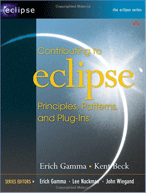
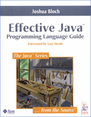
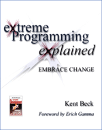

Mylar Contributor Reference
Contributing
Extending Mylar
Those interested in contributing should start out by emailing
mylar-dev@eclipse.org in order to get
an idea of the current priorities. Also refer to the list of
reports marked help wanted. Any significant patches should be
accompanied by unit tests, and in general unit tests are one of the most
valuable contributions. If you are having trouble writing a test (e.g. one
that involves verifying what happened in the UI) please email mylar-dev so that
we can point you at similar test cases or consider extending the test harness if
needed.
- Building Mylar feature from HEAD requires
the latest Eclipse milestone release and
JDK 1.5.
Associate the J2SE-1.5 with your installed JRE on the Execution Environments preference page.
- In the CVS Repositories view, add the following CVS location:
HOST = dev.eclipse.org Repository Path:
/cvsroot/technology.
If you do not have an account you may enter anonymous for the user name
and leave the password blank.
- Check out all of the projects under org.eclipse.mylar (except myar.aspectj,
mylar.sandbox, mylar.viz, and mylar.zest.* which have additional
dependencies). There should be no errors or warnings.
- Run org.eclipse.mylar.tests.AllTests as a JUnit Plug-in Test, with
assertions enabled. All
tests should pass and there should be no console output. The tests
workbench window can be in the foreground or background, but should not
be interacted with during the test execution.
- Add the following to the test configuration under Arguments -> VM
Arguments: -enableassertions -Xmx384M
Building JIRA Integration
- Get the latest
Subclipse plug-in, e.g. from the following update site:
subclipse.tigris.org/update_1.0.x
- Set up a Subversion repository for
JIRA Dashboard:
- Check out the JIRA Dashboard Core featureres:
- org.tigris.jira.core
- org.tigris.jira.core.soap
- org.tigris.jira.core-feature
- org.apache.axis
- org.apache.commons.
All but the most minor patches to Mylar should be made using the latest
release or development build of Mylar. In order to ensure what we
produce and help the Mylar evolve gracefully all contributors must be also
be Mylar users.
- Synchronize often to ensure you have the latest code. Once you
start modifying resources, put the Synchronize view in Outgoing mode and press
the Change Set button so that Mylar tracks the context for the patch.
- For most patches, a failing unit test should be written first.
Before creating a new JUnit test class class check the components test
suite (e.g. AllTasklistTests) for similar test cases (e.g.
AllTasklistTests.suite()).
- Set the formatter by importing org.eclipse.mylar/developer/javaFormatterSettings.xml
into Window -> Preferences -> Java -> Code Style -> Formatter.
Format code using Eclipse's formatter (Ctrl+Shift+F)
and ensure that no have been added.
- Minimize the amount of changes to existing code to make review
easier.
- Ensure that there is no console output. For logging errors use
MylarStatusHandler.
- To submit a patch
- Ensure there are no build errors, warnings, and that org.eclipse.mylar.tests.AllTests passes.
- Synchronize using Incoming mode and ensure that there are no
conflicts, and merge them locally if there are.
- Right click the task context change set (or the project containing
the patch), press Team -> Create Patch, and attach it to the bug report
- Using PDE Build support to create a Mylar distribution from HEAD, using
a plain Eclipse 3.2
- org.eclipse.mylar-feature/feature.xml -> Overview -> change version
number to current date (e.g. 0.4.7.v20060125-0800)
- On Plug-ins tab -> Versions... -> Force feature version into plug-in and
fragment manifests
- Repeat above for org.eclipse.mylar-bugzilla-feature.xml
- org.eclipse.mylar-site/e3.2/site.xml
- Delete old features (grayed out)
- Add new mylar-bugzilla and mylar features
- Hit Build All (if this fails restart Eclipse and try again)
- To install, add the path of org.eclipse.mylar-site/e3.2/site.xml as a
local update site
- Bugzilla support can be built independently of the Mylar UI by checking
out the following projects mylar.bugzilla.core, mylar.bugzilla.ui,
mylar.tasklist, mylar.core
To build the 3.1 branch of the source, follow above steps
- Right-click the org.eclipse.mylar.java, mylar.ide, and mylar.xml
project, Team -> Switch to Another Branch..., then
Refresh the Branches and select e_3_1
- The list of files that should not be overwritten is in:
org.eclipse.mylar/build/merge-eclipse-3.1.txt
| Eclipse Programming |
Java Programming |
Planning |
Task Management |
|
 |
 |
 |
|
Following the Eclipse conventions, Mylar will not make any API guarantees
until the 1.0 release. However, a driving goal of the Mylar project is to
provide a task management and focused UI framework that can be easily extended
by any Eclipse SDK and RCP based applications. The Mylar components are
loosely coupled by preliminary extension points and APIs, and these will be
stabilizing between the 0.5 and 1.0 releases. We strongly recommend that
anyone interest in extending Mylar email
mylar-dev@eclipse.org regarding the status of Mylar extensibility.